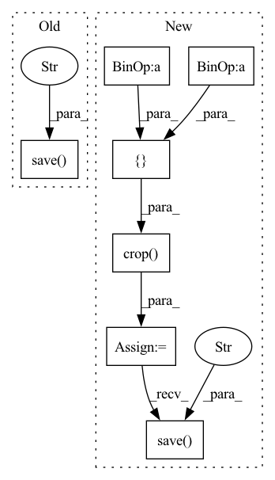

Pattern ID :4557

Before Change
lr_sub_image = transforms.Resize([args.lr_image_size, args.lr_image_size], IMode.BICUBIC)(lr_crop_image)
// Save all images
lr_sub_image.save(f"{lr_image_dir}/{image_file_name.split(".")[0]}_{pos_x}_{pos_y}.bmp")
hr_sub_image.save(f"{hr_image_dir}/{image_file_name.split(".")[0]}_{pos_x}_{pos_y}.bmp")
if __name__ == "__main__":
After Change
for pos_x in range(0, hr_image.size[0] - args.image_size + 1, args.step):
for pos_y in range(0, hr_image.size[1] - args.image_size + 1, args.step):
lr_crop_image = lr_image.crop([pos_x, pos_y, pos_x + args.image_size, pos_y + args.image_size])
hr_crop_image = hr_image.crop([pos_x + 6, pos_y + 6, pos_x + args.image_size - 6, pos_y + args.image_size - 6])
// Save all images
lr_crop_image.save(f"{lr_image_dir}/{image_file_name.split(".")[0]}_{pos_x}_{pos_y}.bmp")
hr_crop_image.save(f"{hr_image_dir}/{image_file_name.split(".")[0]}_{pos_x}_{pos_y}.bmp")
if __name__ == "__main__":
In pattern: SUPERPATTERN
Frequency: 3
Non-data size: 7
Instances
Fragment ID: 16524428
Project Name: lornatang/srcnn-pytorch
Commit Name: c99bc42a8283fd3408204b985cee9a5f3faa5ef0
Time: 2021-11-03
Author: liuchangyu1111@gmail.com
File Name: scripts/prepare_dataset.py
M Class Name: AnonimousClass
N Class Name: AnonimousClass
M Method Name: main(1)
N Method Name: main(1)
M Parent Class:
N Parent Class:
M File Name: scripts/prepare_dataset.py
N File Name: scripts/prepare_dataset.py
M Start Line: 50
M End Line: 67
N Start Line: 44
N End Line: 65
'>
Before Change
// crop box xywh
crop_image = image.crop([pos_x, pos_y, pos_x + args.image_size, pos_y + args.image_size])
// Save all images
crop_image.save(f"{new_image_dir}/{file_name.split(".")[-2]}_{pos_x}_{pos_y}.{file_name.split(".")[-1]}")
print("Data split successful.")
shutil.rmtree(raw_image_dir)
After Change
for pos_y in range(0, lr_image.size[1] - args.image_size + 1, args.step):
// crop box xywh
crop_lr_image = lr_image.crop([pos_x, pos_y, pos_x + args.image_size, pos_y + args.image_size])
crop_hr_image = hr_image.crop([pos_x, pos_y, pos_x + args.image_size, pos_y + args.image_size])
// Save all images
crop_lr_image.save(f"{new_inputs_dir}/{file_name.split(".")[-2]}_{pos_x}_{pos_y}.{file_name.split(".")[-1]}")
crop_hr_image.save(f"{new_target_dir}/{file_name.split(".")[-2]}_{pos_x}_{pos_y}.{file_name.split(".")[-1]}")
print("Data split successful.")
shutil.rmtree(raw_inputs_image_dir)
shutil.rmtree(raw_target_image_dir)
'>
Fragment ID: 16524424
Project Name: lornatang/vdsr-pytorch
Commit Name: 4e24f1c9892bfa6178aed97d12926379f3c40492
Time: 2021-11-22
Author: liuchangyu1111@gmail.com
File Name: scripts/prepare_dataset.py
M Class Name: AnonimousClass
N Class Name: AnonimousClass
M Method Name: main(1)
N Method Name: main(1)
M Parent Class:
N Parent Class:
M File Name: scripts/prepare_dataset.py
N File Name: scripts/prepare_dataset.py
M Start Line: 39
M End Line: 59
N Start Line: 24
N End Line: 76
'>
Before Change
if image.width >= args.image_size and image.height >= args.image_size:
for i in range(10):
new_image = RandomCrop([args.image_size, args.image_size])(image)
new_image.save(f"{image_dir}/{file_name.split(".")[-2]}_{i:03d}.{file_name.split(".")[-1]}")
print("Data split successful.")
if __name__ == "__main__":
After Change
index = 1
for pos_x in range(0, image.width - args.image_size + 1, args.step):
for pos_y in range(0, image.height - args.image_size + 1, args.step):
crop_image = image.crop([pos_x, pos_y, pos_x + args.image_size, pos_y + args.image_size])
// Save all images
crop_image.save(f"{image_dir}/{file_name.split(".")[-2]}_{index:04d}.{file_name.split(".")[-1]}")
index += 1
print("Data split successful.")
'>
Fragment ID: 16524426
Project Name: lornatang/srgan-pytorch
Commit Name: 7e2c04a771e3ff97d9527b6b80d773db0f2ea8c0
Time: 2022-01-10
Author: liuchangyu1111@gmail.com
File Name: scripts/prepare_dataset.py
M Class Name: AnonimousClass
N Class Name: AnonimousClass
M Method Name: main(0)
N Method Name: main(0)
M Parent Class:
N Parent Class:
M File Name: scripts/prepare_dataset.py
N File Name: scripts/prepare_dataset.py
M Start Line: 33
M End Line: 38
N Start Line: 32
N End Line: 41